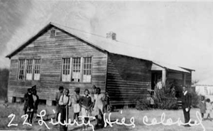
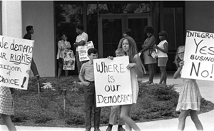
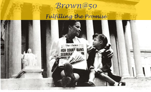

This is an archived copy of History Matters, provided by the Roy Rosenzweig Center for History and New Media. To explore this content in a new interface, visit Who Built America?.

Separate Is Not Equal: Brown v. Board of Education
http://americanhistory.si.edu/brown/
Created and maintained by the National Museum of American History, Kenneth E. Behring Center, Smithsonian Institution, Washington, D.C.
Reviewed June 211, 2006.
The University of Michigan Library Digital Archive: Brown v. Board of Education
http://www.lib.umich.edu/brown-versus-board-education/index.html
Created and maintained by the University of Michigan Library, Ann Arbor.
Reviewed June 211, 2006.
Brown@50: Fulfilling the Promise
http://www.brownat50.org/
Created and maintained by Howard University School of Law, Washington, D.C.
Reviewed June 211, 2006.
When Brown v. Board of Education (1954), the landmark school desegregation case, approached its fiftieth anniversary in 2004, many wondered if the commemoration would be an occasion for collapsing Brown into a consensus symbol of racial progress, rather than a moment to reflect on the persistent state of American inequality. The same challenge attends Brown-related Web sites, many of which were constructed with the anniversary in mind. The three sites examined for this review celebrate Brown as a critical moment in civil rights history, but also provide avenues for exploring the limits of American civil rights reform.
Photographs of segregated schools were one of the tools used in the litigation campaign that resulted in Brown. Separate Is Not Equal is the place to start for such images. The “History” section of the site is constructed as a series of essays that briefly takes the reader through the history of segregation and details the legal campaign. In addition to having compelling photographs of Charles Hamilton Houston, the original architect of the NAACP’s (National Association for the Advancement of Colored People) legal strategy to attack the constitutionality of segregation, the site also reproduces some of Houston’s original photographs.

The Supreme Court consolidated cases from five communities when it decided to hear the Brown appeal. Separate Is Not Equal examines grass-roots civil rights history by following the story through these five communities. It includes images of black and white schools in Clarendon County, South Carolina, Wilmington, Delaware, and elsewhere, and the stories and photographs of local activists. For example, the site tells the story of Barbara Johns, an eleventh grader in Farmville, Virginia, who organized a student strike at her segregated school in 1951 to challenge overcrowding and educational inequality. One hundred and seventeen students sued the school board, and, at the request of NAACP lawyers, changed their case to demand desegregation. Meanwhile, Johns was sent by her family to live with out-of-state relatives for her safety.
Since Brown is, in part, a legal story, one of the challenges for sites that wish to serve a broad audience is making the legal story accessible. Because Web sites can allow readers to engage the material at different levels of detail, depending on their interests, they have a better capacity to make the story accessible than do traditional texts. But that capacity is not always exploited. Separate Is Not Equal provides short narrative descriptions of cases, but no links to court opinions. The site’s depiction of the history of the five cases consolidated into Brown is superb, if brief, but the site provides no avenues to pursue related topics: for example, it provides little information on cases dealing with segregation of Asian and Latino children, with the exception of a very brief mention in a timeline.
The University of Michigan Library Digital Archive is a valuable Web-based archivea place to find sources related to Brown. The archive contains a more comprehensive list of cases, in chronological order, beginning with Plessy v. Ferguson (1896). Short summaries of cases and links to full opinions are particularly helpful, but the site has no narrative overview of the legal history. It is only by clicking on a particular case summary that the uninitiated would learn that Bolling v. Sharpe (1954) was a companion case to Brown. The Digital Archive also has links to published transcripts of the oral arguments in Brown and Bolling. Howard University Law School’s Brown@50 site has the most complete list of cases, with links; it includes the lower court rulings in the five cases consolidated in Brown, and more extensive post-Brown case law. While the Digital Archive and Brown@50 lack the extensive images that make Separate Is Not Equal so striking, they will be more satisfying to researchers.

The Digital Archive provides especially valuable resources on northern school segregation. It includes summaries of lower court cases relating to school segregation in Michigan, beginning with Workman v. Board of Education of Detroit (1869), in which the court found that a Detroit school segregation charter violated state law. Unfortunately, there are no links to full state court opinions. The site contains manuscripts, reports, and correspondence regarding school desegregation in Ann Arbor from the city’s public schools archives. The site also contains images of desegregation in Charlotte, North Carolina, and interesting images of early twentieth-century segregated schools, but, unfortunately, no images of Michigan schools. The site has an excellent set of research-related links. One of the most valuable is the Sweatt v. Painter Archive, http://www.law.du.edu/russell/lh/sweatt/, which contains oral histories, trial court transcripts, and other important sources on this "road to Brown" case involving the University of Texas law school.
Brown@50 will be especially useful for researchers focused on the legal questions in Brown and those interested in links to organizations engaged in ongoing civil rights work. This site’s narrative of Brown's history focuses mostly on the courts. It includes a link to three special issues of the Howard Law Journal that focus on Brown, which include essays by Julian Bond, Mark Tushnet, and Richard Delgado and Jean Stefancic. Brown@50 has the most extensive and wide-ranging list of relevant links, including ones to the sites of the NAACP Legal Defense and Education Fund, the Civil Rights Project at Harvard University, and the Lawyers' Committee for Civil Rights under Law.

While the sites under examination contain rich resources, they also tend to stay within a traditional conceptualization of the story of race in America. This trait is most apparent from what is absent. One aspect of Brown that is well documented in the secondary literature, but absent in all three sites, is its international context. The argument that racial segregation undermined the image of the United States and gave the Soviets an effective propaganda weapon was made by the Justice Department in its Brown brief and was part of the news commentary on the case. Relegating the foreign affairs story to the sidelines might keep the focus on the plaintiffs in Brown narratives, but it also reinforces the idea that, at the end of the day, Brown was an enlightenment story. Bringing in American strategic interests helps us see that Barbara Johns and her fellow students did not simply awaken the moral conscience of America: They shed a global light on the nation’s Achilles' heel, giving them the power to help move the nation. As American history becomes internationalized, we can hope that a global vision will come as well to American history on the Web.
Mary L. Dudziak
University of Southern California Law School
Los Angeles, California